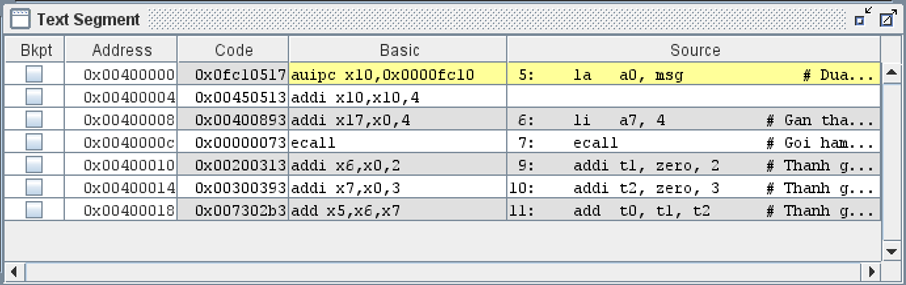

VỀ CÔNG CỤ GIẢ LẬP RARS
- Website chính thức: https://github.com/TheThirdOne/rars
- Tải về nhanh bản RARS version 1.6: https://github.com/TheThirdOne/rars/releases/download/v1.6/rars1_6.jar
Bắt đầu làm việc
Tải về và chạy như sau:
- Tải về Java Runtime Environment, JRE, để chạy công cụ RARS http://www.oracle.com/technetwork/java/javase/downloads/index.html
- Cài đặt JRE
- Tải về công cụ RARS ở URL sau https://github.com/TheThirdOne/rars
Công cụ RARS có thể thực hiện ngay mà không cần cài đặt. Click đúp vào file rars1_6.jar để chạy.
Cơ bản về giao diện lập trình IDE
- Menus: Hầu hết các mục trong menu đều có các icon tương ứng
- Di chuyển chuột lên trên của icon -> Tooltip giải thích về chức năng tương ứng sẽ hiển thị.
- Các mục trong menu cũng có phím tắt tương ứng.
- Toolbar:
- Chứa các tính năng soạn thảo cơ bản như copy, paste, open …
- Các tính năng gỡ lỗi (trong hình chữ nhật màu đỏ)
- Run: chạy toàn bộ chương trình
- Run one step at a time: chạy từng lệnh rồi dừng
- Undo the last step: khôi phục lại trạng thái ở lệnh trước đó
- Pause: tạm dừng quá trình chạy toàn bộ (Run)
- Stop: kết thúc quá trình gỡ lỗi
- Reset memory and register: khởi động lại bộ nhớ và thanh ghi
- Edit tab: RARS có bộ soạn thảo văn bản tích hợp sẵn với tính năng tô màu theo cú pháp, giúp người dùng dễ theo dõi mã nguồn. Đồng thời, khi lệnh được nhập mà chưa hoàn tất, một popup sẽ hiện ra để trợ giúp. Vào menu Settings / Editor… để thay đổi các thiết lập liên quan đến chức năng soạn thảo.
- Edit/Execute:
Mỗi file mã nguồn ở giao diện soạn thảo có 2 cửa sổ (2 tab): Edit và Execute
- Edit tab: viết chương trình hợp ngữ với tính năng tô màu theo cú pháp.
- Execute tab: biên dịch chương trình hợp ngữ đã viết ở Edit tab thành mã máy, chạy và gỡ lỗi.
- Message Areas: Có 2 cửa sổ ở cạnh dưới của giao diện IDE.
- Run I/O chỉ có tác dụng khi chạy chương trình.
- Hiển thị các kết quả xuất ra console
- Nhập dữ liệu vào cho chương trình qua console.
RARS có tùy chọn để mọi thông tin nhập liệu vào qua console sẽ được hiển thị lại ra message area.
- Messages được dùng để hiển thị cho các thông báo còn lại như là các thông báo lỗi trong quá trình biên dịch hay trong quá trình chạy chương trình. Click vào thông báo lỗi để chương trình tự động nhảy tới dòng lệnh gây ra lỗi.
- Run I/O chỉ có tác dụng khi chạy chương trình.
- Registers: Bảng hiển thị giá trị của các thanh ghi của bộ xử lý, luôn luôn được hiển thị, bất kể chương trình hợp ngữ có được chạy hay không. Khi viết chương trình, bảng này sẽ giúp sinh viên nhớ được tên của các thanh ghi và số hiệu của chúng. Có 3 tab trong bảng này:
- Registers: các thanh ghi số nguyên với có thứ tự từ 0 đến 31, và cả thanh ghi bộ đếm chương trình Program Counter.
- Floating Point: các thanh ghi số thực dấu phẩy động.
- Control and Status: các thanh ghi điều khiển và trạng thái, phục vụ cho xử lý ngắt.
Bắt đầu lập trình và hiểu các công cụ với chương trình HelloWorld
- Click vào file rars1_6.jar để bắt đầu chương trình.
- Ở thanh menu, chọn File / New để tạo một file hợp ngữ mới.
- Cửa sổ soạn thảo file hợp ngữ sẽ hiện ra. Bắt đầu lập trình.
- Hãy gõ đoạn lệnh sau vào cửa sổ soạn thảo.
.data # Vung du lieu, chua cac khai bao bien
x: .word 0x01020304 # Bien x, khoi tao gia tri
msg: .asciz "Truong Cong nghe thong tin va Truyen thong"
.text # Vung lenh, chua cac lenh hop ngu
la a0, msg # Dua dia chi bien mesage vao thanh ghi a0
li a7, 4 # Gan thanh ghi a7 = 4
ecall # Goi ham he thong in chuoi ky tu
addi t1, zero, 2 # Thanh ghi t1 = 2
addi t2, zero, 3 # Thanh ghi t2 = 3
add t0, t1, t2 # Thanh ghi t0 = t1 + t2
- Để biên dịch chương trình hợp ngữ trên thành mã máy, thực hiện một trong các cách sau:
- Vào menu Run / Assemble.
- Trên thanh menu, bấm vào biểu tượng
- Bấm phím tắt F3.
- Nếu đoạn hợp ngữ đúng, RARS sẽ chuyển từ Edit tab sang Execute tab.
Chú ý: nếu đoạn hợp ngữ có lỗi, cửa sổ Messages sẽ hiển thị chi tiết lỗi. Bấm vào dòng thông báo lỗi để trình soạn thảo tự động nhảy tới dòng code bị lỗi, rồi tiến hành sửa lại cho đúng.
- Ở Execute tab, có 2 cửa số chính là Text Segment, và Data Segment.
- Text Segment: là vùng không gian bộ nhớ chứa các mã lệnh hợp ngữ. Tương ứng với mã nguồn hợp ngữ, các dòng nào viết sau chỉ thị .text tức là lệnh và sẽ thuộc Text Segment.
- Data Segment: là vùng không gian bộ nhớ chứa các biến. Tương ứng với mã nguồn hợp ngữ, các dòng nào viết sau chỉ thị .data tức là lệnh và sẽ thuộc Data Segment.
Chú ý: vì lý do nào đó, nếu ta khai báo biến sau chỉ thị .text hoặc ngược lại thì trình biên dịch sẽ báo lỗi hoặc bỏ qua khai báo sai đó.
- Ở Execute tab, sử dụng checkbox bên dưới để thay đổi cách hiển thị dữ liệu cho dễ quan sát
- : hiển thị địa chỉ ở dạng số nguyên hệ 16
- : hiển thị giá trị thanh ghi ở dạng số nguyên hệ 16
: hiển thị giá trị trong bộ nhớ ở dạng kí tự ASCII
- Ở Execute tab, trong cửa sổ Text Segment, bảng có 4 cột.

- Bkpt: Breakpoint, điểm dừng khi chạy toàn bộ chương trình bằng nút .
- Address: địa chỉ của lệnh ở dạng số nguyên (xem thêm hướng dẫn về cửa sổ Label)
- Code: lệnh ở dạng mã máy
- Basic: lệnh ở dạng hợp ngữ thuần, giống như qui định trong tập lệnh. Ở đây, tất cả các nhãn, tên gợi nhớ … đều đã được chuyển đổi thành hằng số.
- Source: lệnh ở dạng hợp ngữ có bổ sung các macro, nhãn … giúp lập trình nhanh hơn, dễ hiểu hơn, không còn giống như tập lệnh nữa. Trong ảnh minh họa bên dưới:
- Lệnh la trong cột Source là lệnh giả, không có trong tập lệnh được dịch tương ứng thành 2 lệnh auipc và addi trong cột Basic.
- Nhãn msg trong lệnh la a0, msg trong cột Source địa chỉ của nhãn được thay bằng tham số cho lệnh auipc và addi.
- Ở Execute tab, trong cửa sổ Data Segment, bảng có 9 cột
- Address: địa chỉ của dữ liệu, biến ở dạng số nguyên. Giá trị mỗi dòng tăng 32 đơn vị (ở hệ 10, hoặc 20(16)) bởi vì mỗi dòng sẽ trình bày 32 bytes ở các địa chỉ liên tiếp nhau
- Các cột Value: mỗi cột chứa 4 byte, và có 8 cột, tương ứng với 32 bytes liên tiếp nhau.
Trong hình ảnh trên, có thể thấy rõ giá trị của biến x = 0x01020304 được hiển thị chính xác trong Data Segment khi hiển thị dữ liệu ở dạng số , và giá trị của chuỗi “Truong Cong nghe thong tin va Truyen thong” khi hiển thị ở dạng kí tự .
Lưu ý rằng việc lưu trữ chuỗi trong bộ nhớ ở dạng little-endian là do cách lập trình hàm phần mềm ecalll, chứ không phải do bộ xử lý RISC-V qui định. Có thể thấy, công cụ giả lập qui định hiển thị chuỗi theo kiểu big-endian.
Bấm vào cặp nút để dịch chuyển tới vùng địa chỉ lân cận.
Bấm vào ComboBox để dịch tới vùng bộ nhớ chứa loại dữ liệu được chỉ định. Trong đó lưu ý:
- .data: vùng dữ liệu
- .text: vùng lệnh
- sp: vùng ngăn xếp
- Cửa sổ Label: hiển thị tên nhãn và hằng số địa chỉ tương ứng với nhãn khi được biên dịch ra mã máy.
Cửa sổ Label không tự động hiển thị. Vào menu Settings / chọn Show Labels Windows để bật tắt hiển thị cửa sổ Label.
Trong ảnh sau, ta thấy các thông tin quan trọng:
- Trong cửa số Labels cho biết:
- x chỉ là tên gợi nhớ, x sẽ được qui đổi thành hằng số 0x10010000.
- msg cũng chỉ là tên gợi nhớ, sẽ được qui đổi thành hằng số 0x10010004.
- Click đúp vào tên biến, sẽ tự động chuyển sang vị trí tương ứng trong cửa sổ Data Segment.
- Trong cửa sổ Text Segment cho biết:
- Ở lệnh gán la a0, msg tên gợi nhớ msg đã được chuyển thành hằng số 0x10010004 thông qua cặp lệnh auipc và addi.
- Trong cửa sổ Data Segment cho biết:
- Để giám sát giá trị của biến x, ta mở Data Segment ở hằng số 0x10010000 sẽ nhìn thấy giá trị của x.
- Để giám sát giá trị của biến msg, ta mở Data Segment ở hằng số 0x10010004 sẽ nhìn thấy giá trị của msg.
Chạy giả lập
- Tiếp tục chạy chương trình Hello World ở trên.
- Sử dụng slider bar để thay đổi tốc độ thực thi lệnh hợp ngữ.
Mặc định, tốc độ thực thi là tối đa, và ở mức này, ta không thể can thiệp được nhiều vào quá trình hoạt động của các lệnh và kiểm soát chúng. Có thể dịch chuyển slider bar vể khoảng 2 lệnh/giây để dễ quan sát. - Ở Execute tab, chọn cách để thực thi chương trình
- Bấm vào icon , Run, để thực hiện toàn bộ chương trình. Khi sử dụng Run, ta quan sát dòng lệnh được tô màu vàng cho biết chương trình hợp ngữ đang được xử lý tới chỗ nào. Đồng thời, quan sát sự biến đổi dữ liệu trong cửa sổ Data Segment và cửa sổ Registers.
- Bấm vào icon , Reset, để khởi động lại trình giả lập về trạng thái ban đầu. Tất cả các ngăn nhớ và các thanh ghi đều được gán lại về 0.
- Bấm vào icon , Run one step, để thực thi chỉ duy nhất 1 lệnh rồi chờ bấm tiếp vào icon đó, để thực hiện lệnh kế tiếp.
- Bấm vào icon , Run one step backwards, để khôi phục lại trạng thái và quay trở lại lệnh đã thực thi trước đó.
- Sau khi chạy xong tất cả các lệnh của ví dụ Hello Word, sẽ thấy cửa sổ Run I/O hiển thị chuỗi.
Giả lập & gỡ rối: Quan sát sự thay đổi của các biến
Trong quá trình chạy giả lập, hãy chạy từng lệnh với chức năng Run one step. Ở mỗi lệnh, quan sát sự thay đổi giá trị trong cửa sổ Data Segment và cửa sổ Registers, và hiểu rõ ý nghĩa của sự thay đổi đó.
Giả lập & gỡ rối: Thay đổi giá trị biến khi đang chạy run-time
Trong khi đang chạy giả lập, ta có thể thay đổi giá trị của một ngăn nhớ bất kì bằng cách
- Trong Data Segment, click đúp vào một ngăn nhớ bất kì.
-
Nhập giá trị mới.
-
Tiếp tục chạy chương trình.
Giả lập & gỡ rối: Thay đổi giá trị thanh ghi khi đang chạy run-time
Cách làm tương tự như thay đổi giá trị của biến, áp dụng cho cửa sổ Registers.
Tra cứu Help
Bâm nút Help để xem giải thích các lệnh của RISC-V, các giả lệnh, chỉ dẫn biên dịch và các hàm dịch vụ hệ thống.
Các hằng địa chỉ
Chọn menu Settings / Memory Configuration… Cửa sổ Memory Configuration chứa bảng qui định các hằng địa chỉ mà công cụ RARS sử dụng.
Theo bảng này, có thể thấy các mã lệnh luôn bắt đầu từ địa chỉ 0x00400000, còn dữ liệu luôn bắt đầu từ địa chỉ 0x10000000.